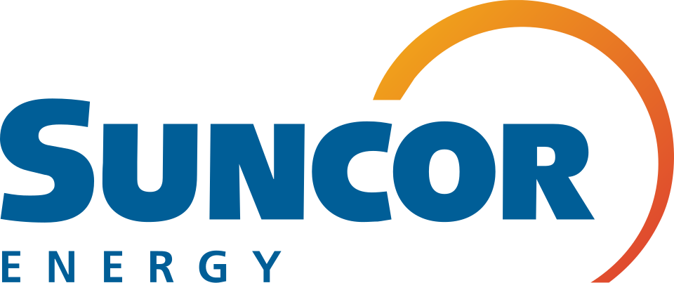

Suncor Energy
Suncor Energy는 캐나다 앨버타주 캘거리에 본사를 둔 캐나다의 종합 에너지 기업이다. 오일샌드에서 합성원유를 생산하는 일을 전문으로 하며, 캐나다에서는 주로 Petro-Canada 브랜드로 연료를 판매한다.
최종 업데이트

Suncor Energy는 어떤 브랜드인가
Suncor Energy는 오일샌드에서 합성원유를 생산하는 데 특화된 캐나다의 종합 에너지 기업이다. 본사는 캐나다 앨버타주 캘거리에 있다.
1979년 Sun Oil이 캐나다의 정제·소매 사업과 Great Canadian Oil Sands 등을 합쳐 Suncor를 출범시켰다. 2009년 Petro-Canada를 인수하면서 캐나다에서 가장 큰 종합 에너지 기업 가운데 하나가 되었다.
캐나다에서는 주로 Petro-Canada 브랜드로 연료를 판매하고, 미국에서는 Shell, Exxon, Mobil 브랜드로 운영되는 소매망을 통해 연료를 판매한다. 2026년 Forbes Global 2000에서 세계 256번째로 큰 상장 기업으로 평가되었다.
Suncor Energy는 어떻게 시작되고 성장했나
Suncor는 1979년 Sun Oil의 캐나다 정제·소매 사업, 과반 지분을 가진 Great Canadian Oil Sands, 재래식 석유·가스 지분을 합병해 출범했다. Great Canadian Oil Sands는 1962년 앨버타 정부로부터 Athabasca 오일샌드에 플랜트를 지을 허가를 받았고, 이듬해 Sun이 과반 지분을 사들였으며, 플랜트는 1967년 가동을 시작했다.
1981년 온타리오 정부가 지분 25%를 매입했다가 1993년 처분했고, 1995년에는 Sun Oil도 지분을 처분했다. 이 두 차례의 지분 처분으로 Suncor는 소유가 널리 분산된 독립 상장 기업이 되었다.
2009년에는 Petro-Canada를 인수해 캐나다 최대 규모의 종합 에너지 기업 중 하나로 성장했다.
Suncor Energy의 브랜드 아이덴티티는 무엇인가
오일샌드에서 합성원유를 생산하는 데 특화한 캐나다의 종합 에너지 기업이다. 세계 최초의 상업적 오일샌드 사업을 개발한 Great Canadian Oil Sands를 뿌리로 둔다.
Suncor Energy의 대표 제품과 서비스는 무엇인가
Suncor의 핵심 사업은 오일샌드에서 합성원유를 생산하는 것이다. 2016년 1월 Canadian Oil Sands 인수에 합의하면서 Syncrude 지분이 49%로 늘었고, 같은 해 4월 Murphy Oil의 5% 지분 인수를 발표해 지분이 54%에 가까워졌다.
2021년 가을에는 Syncrude 합작 사업의 운영을 넘겨받았고, 현재 지분은 58.74퍼센트이다. 연료 소매는 캐나다에서 주로 Petro-Canada 브랜드로, 미국에서는 Shell, Exxon, Mobil 브랜드의 소매망으로 이루어진다.
2003년 ConocoPhillips로부터, 2005년 Valero Energy로부터 콜로라도주 Commerce City의 정제소를 각각 인수했다.
Suncor Energy는 지금 어떤 상태인가
2023년 4월 Richard Kruger가 사장 겸 최고경영자에 임명되었다. 2026년 8월 Suncor는 2027년 4월 Peter Zebedee가 Kruger의 뒤를 이어 사장 겸 최고경영자를 맡는다고 발표했다.
2023년 6월에는 사이버 공격으로 고객 및 공급업체와의 거래에 차질이 빚어졌다. 2026년 Forbes Global 2000에서는 세계 256번째로 큰 상장 기업으로 평가되었다.
Suncor Energy 로고는 어떻게 변해왔나
자주 묻는 질문
Suncor Energy는 어느 나라 브랜드인가요?
Suncor Energy는 캐나다의 에너지·산업재 브랜드입니다.
Suncor Energy는 언제 설립되었나요?
Suncor Energy는 1917년 설립되었습니다.
Suncor Energy의 브랜드 아이덴티티는 무엇인가요?
오일샌드에서 합성원유를 생산하는 데 특화한 캐나다의 종합 에너지 기업이다.
Suncor Energy의 대표 제품은 무엇인가요?
Suncor의 핵심 사업은 오일샌드에서 합성원유를 생산하는 것이다.
Suncor Energy는 현재 어떤 상태인가요?
2023년 4월 Richard Kruger가 사장 겸 최고경영자에 임명되었다.
Suncor Energy의 본사는 어디에 있나요?
Suncor Energy의 본사는 캘거리에 있습니다(위키데이터 기준).
Suncor Energy의 공식 웹사이트는 어디인가요?
Suncor Energy의 공식 웹사이트는 http://www.suncor.com/ 입니다.
출처와 검증
Suncor Energy 관련 참고: 공식 웹사이트 · 위키데이터 Q1516410 · 영어 위키백과. 브랜드명은 한글과 원어를 함께 표기하되 데이터에 없는 표기는 만들지 않습니다. 기원 국가·설립연도는 검수된 정의문에서 확인된 값을 우선하고, 없을 때만 공식 웹사이트 URL이 일치하는 위키데이터 개체의 값을 씁니다. 위키데이터 값은 2026-11-15 기준입니다.